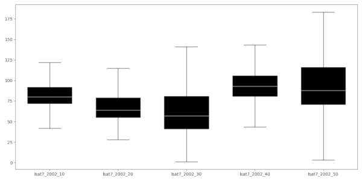
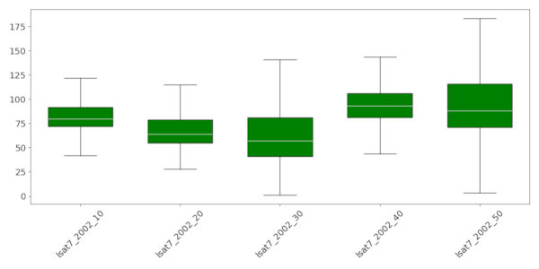

The whiskers of the boxplots extend to the most extreme data point, which is no more than range ✕ the interquartile range (iqr) from the box. By default, a range of 1.5 is used, but the user can change this. Note that range values need to be larger than 0. By default, outliers are not included in the plot. Set the -o flag to include them in the plot.
There are a few layout options, including the option to rotate the plot and the x-axis labels, print the boxplot(s) with notches, and define the color of the boxplots.
By default, the raster names are used as labels, but the user can explicitly define the labels (example 3 below). The number of labels need to be the same as the number of input raster layers.
By default, the resulting plot is displayed on screen. However, the user can also save the plot to file using the em>output option. The format is determined by the extension given by the user. So, if output = outputfile.png, the plot will be saved as a *png* file. The user can set the output size (in inches) and resolution (dpi) of the output image.
r.series.boxplot plot_dimensions=12,6 \ map=lsat7_2002_10,lsat7_2002_20,lsat7_2002_30,lsat7_2002_40,lsat7_2002_50

r.series.boxplot plot_dimensions=12,6 \ map=lsat7_2002_10,lsat7_2002_20,lsat7_2002_30,lsat7_2002_40,lsat7_2002_50 \ bxcolor=green rotate_labels=45 fontsize=14
See [here](https://matplotlib.org/stable/tutorials/colors/colors.html) for the different formats in which colors can be specified.

r.series.boxplot -o plot_dimensions=12,6 rotate_labels=45 fontsize=14 \ map=lsat7_2002_10,lsat7_2002_20,lsat7_2002_30,lsat7_2002_40,lsat7_2002_50 \ flier_color=blue bxcolor=green \ text_labels="2002 10,2002 20,2002 30,2002 40,2002 50"